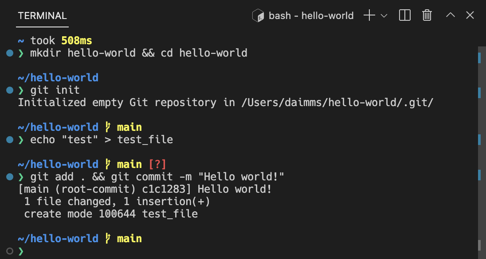

Terminal Basics
Visual Studio Code includes a full featured integrated terminal that conveniently starts at the root of your workspace. It provides integration with the editor to support features like links and error detection.
To open the terminal:
- Use the ` (Windows, Linux Ctrl+`) keyboard shortcut to toggle the terminal panel.
- Use the ` (Windows, Linux Ctrl+Shift+`) keyboard shortcut to create a new terminal.
- Use the View > Terminal or Terminal > New Terminal menu commands.
- From the Command Palette (P (Windows, Linux Ctrl+Shift+P)), use the View: Toggle Terminal command.

Note: Open an external terminal with the C (Windows, Linux Ctrl+Shift+C) keyboard shortcut if you prefer to work outside VS Code.
Terminal shells
The integrated terminal can use various shells installed on your machine, with the default being pulled from your system defaults. Shells are detected and presented in the terminal profiles dropdown.

You can learn more about configuring terminal shells in the terminal profiles article.
Managing terminals
The terminal tabs UI is on the right side of the terminal view. Each terminal has an entry with its name, icon, color, and group decoration (if any).

Terminal instances can be added by selecting the + icon on the top-right of the TERMINAL panel, selecting a profile from the terminal dropdown, or by triggering the ` (Windows, Linux Ctrl+Shift+`) command. This action creates another entry in the tab list associated with that terminal.
Remove terminal instances by hovering a tab and selecting the Trash Can button, selecting a tab item and pressing Delete, using Terminal: Kill the Active Terminal Instance command, or via the right-click context menu.
Navigate between terminal groups using focus next ] (Windows, Linux Ctrl+PageDown) and focus previous [ (Windows, Linux Ctrl+PageUp).
Icons may appear to the right of the terminal title on the tab label when a terminal's status changes. Some examples are a bell (macOS) and for tasks, displaying a check mark when there are no errors and an X otherwise. Hover the icon to read status information, which may contain actions.
Groups (split panes)
Multiple terminals can be placed side-by-side are called a group and are created by splitting a terminal:
- On hover, selecting the inline split button.
- Right-clicking the context menu and selecting the Split menu option.
- Alt and click on a tab, the + button, or the single tab on the terminal panel.
- Triggering the \ (Windows, Linux Ctrl+Shift+5) command.
Tip: The working directory for the new terminal depends on the
terminal.integrated.splitCwdsetting.
Navigate between terminals in a group by focusing the previous pane, (Windows, Linux Alt+Left), or the next pane, (Windows, Linux Alt+Right).
Dragging and dropping tabs in the list will rearrange them. Dragging a tab into the main terminal area allows moving a terminal from one group to another.
Moving a terminal into its own group can be done with the Terminal: Unsplit Terminal command through the Command Palette or in the right-click context menu.
Terminals in editor area
Terminal in the editor area, also known as terminal editors, can be created through the Terminal: Create New Terminal in Editor Area and Terminal: Create New Terminal in Editor Area to the Side commands or by dragging a terminal from the terminal view into the editor area.

Terminal editors are ideal if you want a complex workbench layout such as terminals on either side of an editor or terminals arranged in two dimensions. Below PowerShell and WSL terminals are stacked in an editor group to the right of a group of file editors.

The terminal.integrated.defaultLocation setting can change the default terminal location to be in either the view or editor areas.
Navigating the buffer
The content in the terminal is called the buffer, with the section right above the bottom viewport being called "scrollback". The amount of scrollback kept is determined by the terminal.integrated.scrollback setting and defaults to 1000 lines.
There are various commands available to navigate around the terminal buffer:
- Scroll up a line - PageUp (Windows Ctrl+Alt+PageUp, Linux Ctrl+Shift+Up)
- Scroll down a line - PageDown (Windows Ctrl+Alt+PageDown, Linux Ctrl+Shift+Down)
- Scroll up a page - PageUp (Windows, Linux Shift+PageUp)
- Scroll down a page - PageDown (Windows, Linux Shift+PageDown)
- Scroll to the top - Home (Windows Ctrl+Home, Linux Shift+Home)
- Scroll to the bottom - End (Windows Ctrl+End, Linux Shift+End)
Command navigation is also available (see shell integration):
- Scroll to the previous command - (Windows, Linux Ctrl+Up)
- Scroll to the next command - (Windows, Linux Ctrl+Down)
Scrolling will happen instantaneously, but can be configured to animate over a short duration with the terminal.integrated.smoothScrolling setting.
Links
The terminal features sophisticated link detection with editor integration and even extension contributed link handlers. Links are activated by mousing over the link so an underline appears, then hold Ctrl/Cmd and click.
There are several built-in link handlers that are used in the following priority order:
-
URIs/URLs: These are links that look like URIs, such as
https://code.visualstudio.com. These will open the system browser at that location.
-
File links: These are links that we have verified represent files on the system. These will open the file in a new editor tab and support common line/column formats such as
file:1:2,file:line 1, column 2.
-
Folder links: These are similar to file links but will open a new VS Code window at the folder.

-
Word links: This is the fallback link type and uses the
terminal.integrated.wordSeparatorssetting to define word boundaries and make nearly all text into words. Activating a word link will search the workspace for the word, if there is a single result it will open, otherwise it will present the search results. Word links are considered "low confidence" and will not show an underline or tooltip unless Ctrl/Cmd is held. They also have limited support for line and column suffixes.
Extensions handling links
Extensions can contribute link providers which allow the extension to define what happens when clicked. An example of this is the GitLens extension detecting Git branch links.
Keyboard accessibility
Links are keyboard accessible through several commands that open links based on the type of link. These commands do not have default keyboard shortcuts.
- Terminal: Open Last Local File Link - Opens the most recent local file link.
- Terminal: Open Last URL link - Opens the most recent URI/URL link.
- Terminal: Open Detected Link... - Opens a searchable Quick Pick with all links (including word links).
Copy & paste
The keybindings for copy and paste follow platform standards:
- Linux: Ctrl+Shift+C and Ctrl+Shift+V; selection paste is available with Shift+Insert
- macOS: Cmd+C and Cmd+V
- Windows: Ctrl+C and Ctrl+V
Copying is done automatically on selection when terminal.integrated.copyOnSelection is enabled.
By default there is a warning when pasting multiple lines, which can be disabled with the terminal.integrated.enableMultiLinePasteWarning setting. This is only done when the shell does not support "bracketed paste mode". When that mode is enabled, the shell is indicating that it can handle multiple line pasting.
Using the mouse
Right-click behavior
The right-click behavior differs based on the platform:
- Linux: Show the context menu.
- macOS: Select the word under the cursor and show the context menu.
- Windows: Copy and drop selection if there is a selection, otherwise paste.
This can be configured using the terminal.integrated.rightClickBehavior setting. The options are:
default- Show the context menu.copyPaste- Copy when there is a selection, otherwise paste.paste- Paste on right-click.selectWord- Select the word under the cursor and show the context menu.nothing- Do nothing and pass event to terminal.
Reposition the cursor with Alt
Alt and left-click will reposition the cursor to underneath the mouse. This works by simulating arrow keystrokes, which may not work reliably for some shells or programs. This feature can be disabled with the terminal.integrated.altClickMovesCursor setting.
Mouse events mode
When applications running in the terminal turn on mouse events mode, such as Vim mouse mode, mouse interaction is sent to the application instead of the terminal. This means that clicking and dragging will no longer create a selection. Terminal selection can be forced by holding the Alt key on Windows and Linux, this can also be done with the Option key on macOS but requires enabling the terminal.integrated.macOptionClickForcesSelection setting first.
Find
The integrated terminal has find functionality that can be triggered with F (Windows, Linux Ctrl+F).

Tip: Ctrl+F can be sent to the shell by removing the
workbench.action.terminal.focusFindcommand from commands to skip shell.
Run selected text
To use the runSelectedText command, select text in an editor and run the command Terminal: Run Selected Text in Active Terminal via the Command Palette (P (Windows, Linux Ctrl+Shift+P)), the terminal will attempt to run the selected text. If no text is selected in the active editor, the entire line that the cursor is on will run in the terminal.
Tip: Also run the active file using the command
workbench.action.terminal.runActiveFile.
Maximizing the terminal
The terminal view can be maximized by clicking the maximize panel size button with the upwards chevron icon. This will temporarily hide the editors and maximize the panel. This is useful to temporarily focus on a large amount of output. Some developers use VS Code as a standalone terminal by opening a new window, maximizing the panel, and hiding the side bar.
Select all
There is a Terminal: Select All command, which is bound to Cmd+A on macOS, but does not have a default keybinding on Windows and Linux as it may conflict with shell hotkeys. To use Ctrl+A to select all, add this custom keybinding:
{
"key": "ctrl+a",
"command": "workbench.action.terminal.selectAll",
"when": "terminalFocus && !isMac"
},
Drag and drop file paths
Dragging a file into the terminal will input the path into the terminal, with escaping to match the active shell.
Automating terminals with tasks
The Tasks feature can be used to automate the launching of terminals, for example, the following .vscode/tasks.json file will launch a Command Prompt and PowerShell terminal in a single terminal group when the window starts:
{
"version": "2.0.0",
"presentation": {
"echo": false,
"reveal": "always",
"focus": false,
"panel": "dedicated",
"showReuseMessage": true
},
"tasks": [
{
"label": "Create terminals",
"dependsOn": [
"First",
"Second"
],
// Mark as the default build task so cmd/ctrl+shift+b will create them
"group": {
"kind": "build",
"isDefault": true
},
// Try start the task on folder open
"runOptions": {
"runOn": "folderOpen"
}
},
{
// The name that shows up in terminal tab
"label": "First",
// The task will launch a shell
"type": "shell",
"command": "",
// Set the shell type
"options": {
"shell": {
"executable": "cmd.exe",
"args": []
}
},
// Mark as a background task to avoid the spinner animation on the terminal tab
"isBackground": true,
"problemMatcher": [],
// Create the tasks in a terminal group
"presentation": {
"group": "my-group"
}
},
{
"label": "Second",
"type": "shell",
"command": "",
"options": {
"shell": {
"executable": "pwsh.exe",
"args": []
}
},
"isBackground": true,
"problemMatcher": [],
"presentation": {
"group": "my-group"
}
}
]
}
This file could be committed to the repository to share with other developers or created as a user task via the workbench.action.tasks.openUserTasks command.
Working directory
By default, the terminal will open at the folder that is opened in the Explorer. The terminal.integrated.cwd setting allows specifying a custom path to open instead:
{
"terminal.integrated.cwd": "/home/user"
}
Split terminals on Windows will start in the directory that the parent terminal started with. On macOS and Linux, split terminals will inherit the current working directory of the parent terminal. This behavior can be changed using the terminal.integrated.splitCwd setting:
{
"terminal.integrated.splitCwd": "workspaceRoot"
}
There are also extensions available that give more options such as Terminal Here.
Fixed dimension terminals
The Terminal: Set Fixed Dimensions command allows changing the number of columns and rows that the terminal and it's backing psuedoterminal uses. This will add scroll bars when necessary, which may lead to an unpleasant UX and is generally not recommended, but it is a common ask on Windows in particular for reading logs or long lines when paging tools aren't available.
You can also right-click on a terminal tab and select Toggle Size to Content Width (Z (Windows, Linux Alt+Z)) to resize the number of terminal columns to the largest wrapped line in the terminal.
Next steps
The basics of the terminal have been covered in this document. Read on to find out more about:
- Tasks - Tasks let you integrate with external tools and leverage the terminal heavily.
- Mastering VS Code's Terminal - An external blog with plenty of power user tips for the terminal.
- Explore terminal commands by browsing the keyboard shortcuts within VS Code (Preferences: Open Keyboard Shortcuts then search on 'terminal').
Common questions
I'm having problems launching the terminal
There's a dedicated troubleshooting guide for these sorts of problems.
Why is nvm complaining about a prefix option when the integrated terminal is launched?
nvm (Node Version Manager) users often see this error for the first time inside VS Code's integrated terminal:
nvm is not compatible with the npm config "prefix" option: currently set to "/usr/local"
Run `npm config delete prefix` or `nvm use --delete-prefix v8.9.1 --silent` to unset it
This is mostly a macOS problem and does not happen in external terminals. The typical reasons for this are the following:
npmwas globally installed using another instance ofnodethat is somewhere in your path (such as/usr/local/bin/npm).- To get the development tools on the
$PATH, VS Code will launch a bash login shell on startup. This means that your~/.bash_profilehas already run and when an integrated terminal launches, it will run another login shell, reordering the$PATHpotentially in unexpected ways.
To resolve this issue, you need to track down where the old npm is installed and remove both it and its out-of-date node_modules. Find the nvm initialization script and run which npm before it runs, which should print the path when you launch a new terminal.
Once you have the path to npm, find the old node_modules by resolving the symlink by running a command something like this:
ls -la /usr/local/bin | grep "np[mx]"
This will give you the resolved path at the end:
... npm -> ../lib/node_modules/npm/bin/npm-cli.js
... npx -> ../lib/node_modules/npm/bin/npx-cli.js
From there, removing the files and relaunching VS Code should fix the issue:
rm /usr/local/bin/npm /usr/local/lib/node_modules/npm/bin/npm-cli.js
rm /usr/local/bin/npx /usr/local/lib/node_modules/npm/bin/npx-cli.js
Why does macOS make a ding sound when I resize terminal split panes?
The keybindings and are the defaults for resizing individual split panes in the terminal. While they work, they also cause a system "invalid key" sound to play due to an issue in Chromium. The recommended workaround is to tell macOS to no-op for these keybindings by running this in your terminal:
mkdir -p ~/Library/KeyBindings
cat > ~/Library/KeyBindings/DefaultKeyBinding.dict <<EOF
{
"^@\UF701" = "noop";
"^@\UF702" = "noop";
"^@\UF703" = "noop";
}
EOF
I'm having problems with the terminal rendering. What can I do?
By default, the integrated terminal will render using GPU acceleration on most machines. Typically when there are rendering problems it's an issue of something in your hardware/OS/drivers not playing nicely with the GPU renderer. The first thing to try is to disable GPU acceleration, trading off rendering speed for DOM-based rendering, which is more reliable:
{
"terminal.integrated.gpuAcceleration": "off"
}
See the GPU acceleration section for more information.
I see 1~ or [201~ when I paste something
This normally means that the program/shell running inside the terminal requested to turn on "bracketed paste mode" but something doesn't support it properly. To work around this, you could run printf "\e[?2004l" to disable it for that session or add the following to your ~/.inputrc file:
set enable-bracketed-paste off
Ctrl+A, Ctrl+R output ^A, ^R on zsh
This can happen if zsh is in Vim mode instead of Emacs mode, due to setting $EDITOR or $VISUAL to vi/vim in your init scripts.
To work around this, you have two options:
- Ensure that you don't set
$EDITORtovi(m). However, this isn't an option if you want your Git editor to work. - Add
bindkey -eto your init script to set Emacs explicitly.
How can I configure Cmd+. to map to Ctrl+C like macOS' built-in terminal?
The macOS default terminal uses Cmd+. to perform the same as Ctrl+C. To get this behavior in VS Code, add this custom keybinding:
{
"key": "cmd+.",
"command": "workbench.action.terminal.sendSequence",
"when": "terminalFocus",
"args": { "text": "\u0003" }
}
Why are the colors in the terminal not correct?
One of our accessibility features we enable by default is to ensure a minimum contrast ratio of at least 4.5 is met for the foreground text. This feature ensures that text is readable regardless of the shell and theme used which is not possible otherwise. To disable this feature, you can set:
"terminal.integrated.minimumContrastRatio": 1
See the minimum contrast ratio section for more information.